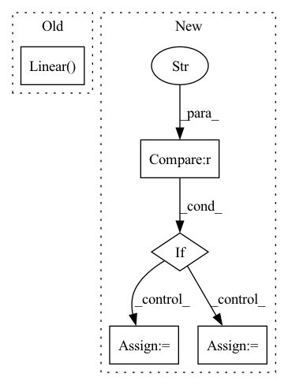

Pattern ID :637

Before Change
io_size = ch * freqs
self.gru = nn.GRU(io_size, hidden_size, *args, **kwargs)
self.norm = nn.LayerNorm(hidden_size)
self.fc = nn.Linear(hidden_size, io_size)
def forward(self, x: Tensor, h: Optional[Tensor] = None) -> Tuple[Tensor, Tensor]:
GRU transposing [B, C, T, F] input shape to [B, T, C*F].
_, _, _, f = x.shape
After Change
super().__init__()
self.conv = Conv2dNormAct(in_ch, out_ch, kernel_size=kernel, fstride=fstride)
assert gru_mode in ("skip", "scale")
if gru_mode == "skip":
skip = nn.Identity
scale = None
else:
skip = None
scale = nn.Sigmoid
self.gru = GruSE(out_ch, gru_dim, groups=gru_groups, skip=skip, scale_activation=scale)
def forward(self, input: Tensor, h=None) -> Tuple[Tensor, Tensor]:
In pattern: SUPERPATTERN
Frequency: 3
Non-data size: 5
Instances
Fragment ID: 1570582
Project Name: rikorose/deepfilternet
Commit Name: 29ca309dcc54dd9da42b84a8c2a658b009f143a1
Time: 2022-04-12
Author: h.schroeter@pm.me
File Name: DeepFilterNet/df/multistagenet.py
Class Name: GruMlp
Method Name: __init__
Parent Class: nn.Module
Fragment ID: 1570567
Project Name: allenai/embeddingrecycling
Commit Name: e8f2ce21388322a4ea20ce43cd214ed12c49e8fd
Time: 2022-03-15
Author: jonsaadfalcon@gmail.com
File Name: General_BiLSTM+LinearClassifer.py
Class Name: CustomBERTModel
Method Name: __init__
Parent Class: nn.Module
Fragment ID: 1570590
Project Name: replicable-marl/marllib
Commit Name: 229bfd1c9db33d2ff0761dbdbe21e47a47a9b87c
Time: 2023-02-23
Author: hhhusiyi@163.com
File Name: marllib/marl/models/zoo/rnn/base_rnn.py
Class Name: Base_RNN
Method Name: __init__
Parent Class: TorchRNN,nn.Module